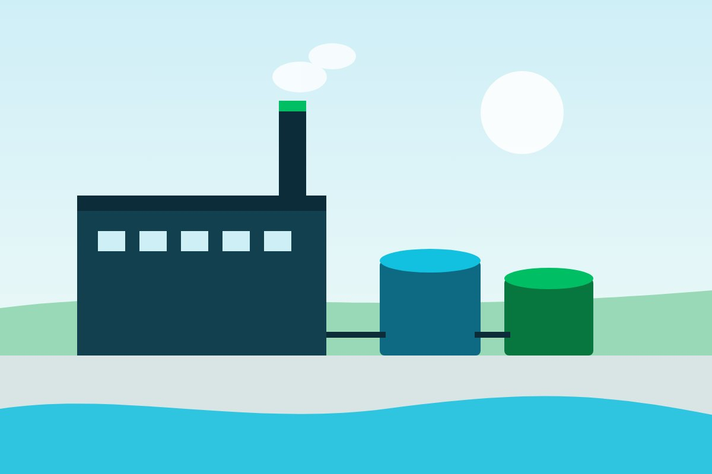
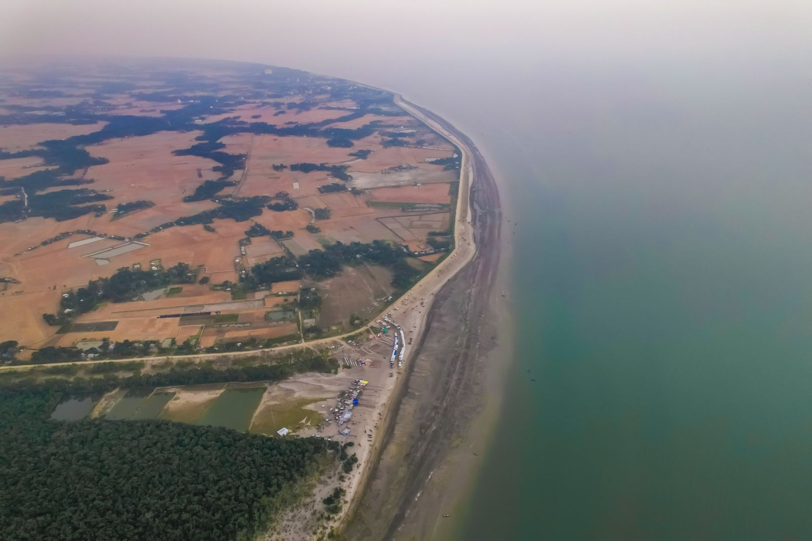
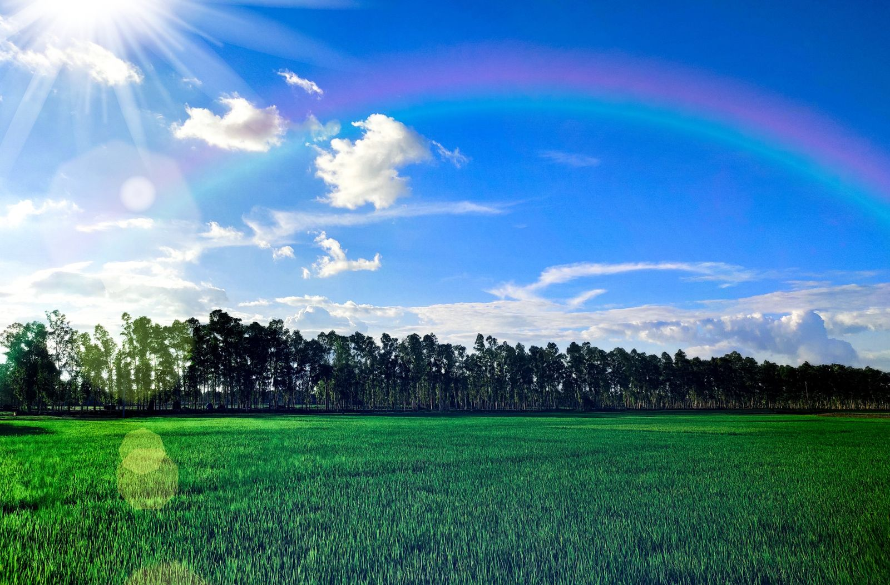
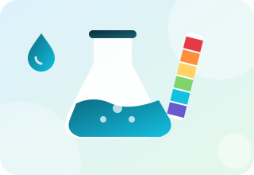
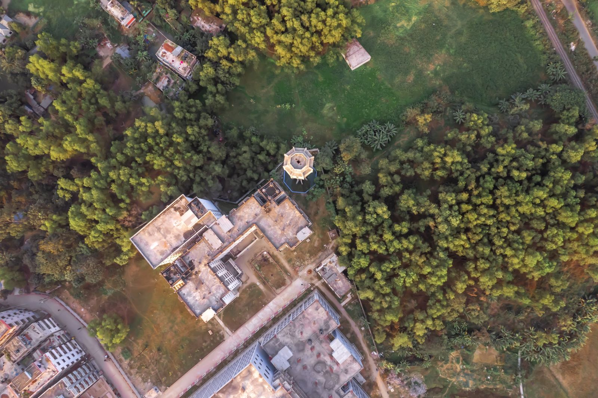

নিয়মকানুন
আইইই নাকি ইআইএ: আপনার প্রকল্পে কোনটি লাগবে?
আপনার প্রকল্প কোন শ্রেণিতে পড়ে, তা-ই ঠিক করে কাজের পরিধি, খরচ ও সময়।
যে বিষয়গুলো নিয়ে আমরা প্রতিদিন কাজ করি, সেগুলোর সহজবোধ্য ব্যাখ্যা।

আপনার প্রকল্প কোন শ্রেণিতে পড়ে, তা-ই ঠিক করে কাজের পরিধি, খরচ ও সময়।

ইফ্লুয়েন্ট ট্রিটমেন্ট প্ল্যান্ট নদী ও জনগোষ্ঠীকে সুরক্ষা দেয় এবং আপনার ছাড়পত্র বহাল রাখে।

ধাপগুলো আগে থেকে জানা থাকলে কাজ সহজ হয়, আর নবায়নেও মনোযোগ দিতে হয়।

প্রভাব কমাতে কে কী করবে এবং তা কীভাবে যাচাই হবে, তার একটি পরিকল্পনা।

ডেটা মানচিত্রে বসালে বোঝা যায় কোথায় কী ঘটছে, আর ফলাফল যাচাই করাও সহজ হয়।

স্যাটেলাইট একই জায়গার ছবি বারবার তোলে, তাই পরিবর্তন পরিমাপ করা যায়।
দুর্যোগ, উন্মুক্ততা ও ঝুঁকিপূর্ণতা মিলিয়ে দেখানো হয় কোন এলাকায় আগে নজর দিতে হবে।

SPI ও SPEI-এর মতো সূচক দীর্ঘমেয়াদি বৃষ্টিপাত ও তাপমাত্রার রেকর্ডকে খরার সংকেতে রূপ দেয়।

নমুনা সংগ্রহের পরিকল্পনাই ঠিক করে দেয় আপনার ফলাফল বিশ্বাসযোগ্য কিনা।

স্পষ্ট সীমানা ও ভালো ডেটা দিয়ে শুরু করুন, তারপর একটি প্রতিবেদন কাঠামো বেছে নিন।

যে ডেটা পাওয়া যায় তা দিয়ে শুরু করুন, প্রশ্ন সুনির্দিষ্ট রাখুন এবং শুরুতেই পরিকল্পনা চূড়ান্ত করুন।
থিসিস মানেই গবেষণাপত্র নয়। একটিকে কীভাবে অন্যটিতে রূপ দেবেন, তা এখানে।
আমাদের কোম্পানি প্রোফাইল বা নমুনা প্রতিবেদনের রূপরেখা দরকার? আমাদের জানান আমরা পাঠিয়ে দেব।
আপনার কী প্রয়োজন, সংক্ষেপে লিখে পাঠান। আমরা এক কর্মদিবসের মধ্যে উত্তর দিই, সাধারণত কিছু প্রশ্ন ও একটি প্রাথমিক পরিকল্পনাসহ।